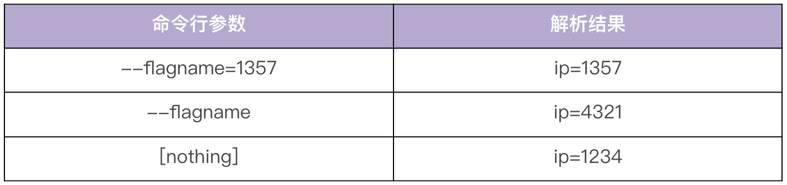

- 00 开篇词 从 0 开始搭建一个企业级 Go 应用.md.html
- 01 IAM系统概述：我们要实现什么样的 Go 项目？.md.html
- 02 环境准备：如何安装和配置一个基本的 Go 开发环境？.md.html
- 03 项目部署：如何快速部署 IAM 系统？.md.html
- 04 规范设计（上）：项目开发杂乱无章，如何规范？.md.html
- 05 规范设计（下）：commit 信息风格迥异、难以阅读，如何规范？.md.html
- 06 目录结构设计：如何组织一个可维护、可扩展的代码目录？.md.html
- 07 工作流设计：如何设计合理的多人开发模式？.md.html
- 08 研发流程设计（上）：如何设计 Go 项目的开发流程？.md.html
- 09 研发流程设计（下）：如何管理应用的生命周期？.md.html
- 10 设计方法：怎么写出优雅的 Go 项目？.md.html
- 11 设计模式：Go常用设计模式概述.md.html
- 12 API 风格（上）：如何设计RESTful API？.md.html
- 13 API 风格（下）：RPC API介绍.md.html
- 14 项目管理：如何编写高质量的Makefile？.md.html
- 15 研发流程实战：IAM项目是如何进行研发流程管理的？.md.html
- 16 代码检查：如何进行静态代码检查？.md.html
- 17 API 文档：如何生成 Swagger API 文档 ？.md.html
- 18 错误处理（上）：如何设计一套科学的错误码？.md.html
- 19 错误处理（下）：如何设计错误包？.md.html
- 20 日志处理（上）：如何设计日志包并记录日志？.md.html
- 21 日志处理（下）：手把手教你从 0 编写一个日志包.md.html
- 22 应用构建三剑客：Pflag、Viper、Cobra 核心功能介绍.md.html
- 23 应用构建实战：如何构建一个优秀的企业应用框架？.md.html
- 24 Web 服务：Web 服务核心功能有哪些，如何实现？.md.html
- 25 认证机制：应用程序如何进行访问认证？.md.html
- 26 IAM项目是如何设计和实现访问认证功能的？.md.html
- 27 权限模型：5大权限模型是如何进行资源授权的？.md.html
- 28 控制流（上）：通过iam-apiserver设计，看Web服务的构建.md.html
- 29 控制流（下）：iam-apiserver服务核心功能实现讲解.md.html
- 30 ORM：CURD 神器 GORM 包介绍及实战.md.html
- 31 数据流：通过iam-authz-server设计，看数据流服务的设计.md.html
- 32 数据处理：如何高效处理应用程序产生的数据？.md.html
- 33 SDK 设计（上）：如何设计出一个优秀的 Go SDK？.md.html
- 34 SDK 设计（下）：IAM项目Go SDK设计和实现.md.html
- 35 效率神器：如何设计和实现一个命令行客户端工具？.md.html
- 36 代码测试（上）：如何编写 Go 语言单元测试和性能测试用例？.md.html
- 37 代码测试（下）：Go 语言其他测试类型及 IAM 测试介绍.md.html
- 38 性能分析（上）：如何分析 Go 语言代码的性能？.md.html
- 39 性能分析（下）：API Server性能测试和调优实战.md.html
- 40 软件部署实战（上）：部署方案及负载均衡、高可用组件介绍.md.html
- 41 软件部署实战（中）：IAM 系统生产环境部署实战.md.html
- 42 软件部署实战（下）：IAM系统安全加固、水平扩缩容实战.md.html
- 43 技术演进（上）：虚拟化技术演进之路.md.html
- 44 技术演进（下）：软件架构和应用生命周期技术演进之路.md.html
- 45 基于Kubernetes的云原生架构设计.md.html
- 46 如何制作Docker镜像？.md.html
- 47 如何编写Kubernetes资源定义文件？.md.html
- 48 IAM 容器化部署实战.md.html
- 49 服务编排（上）：Helm服务编排基础知识.md.html
- 50 服务编排（下）：基于Helm的服务编排部署实战.md.html
- 51 基于 GitHub Actions 的 CI 实战.md.html
- 特别放送 Go Modules依赖包管理全讲.md.html
- 特别放送 Go Modules实战.md.html
- 特别放送 IAM排障指南.md.html
- 特别放送 分布式作业系统设计和实现.md.html
- 特别放送 给你一份Go项目中最常用的Makefile核心语法.md.html
- 特别放送 给你一份清晰、可直接套用的Go编码规范.md.html
- 直播加餐 如何从小白进阶成 Go 语言专家？.md.html
- 结束语 如何让自己的 Go 研发之路走得更远？.md.html
- 捐赠
22 应用构建三剑客：Pflag、Viper、Cobra 核心功能介绍
你好，我是孔令飞。这一讲我们来聊聊构建应用时常用的Go包。
因为IAM项目使用了Pflag、Viper和Cobra包来构建IAM的应用框架，为了让你后面学习更加容易，这里简单介绍下这3个包的核心功能和使用方式。其实如果单独讲每个包的话，还是有很多功能可讲的，但我们这一讲的目的是减小你后面学习IAM源码的难度，所以我会主要介绍跟IAM相关的功能。
在正式介绍这三个包之前，我们先来看下如何构建应用的框架。
如何构建应用框架
想知道如何构建应用框架，首先你要明白，一个应用框架包含哪些部分。在我看来，一个应用框架需要包含以下3个部分：
- 命令行参数解析：主要用来解析命令行参数，这些命令行参数可以影响命令的运行效果。
- 配置文件解析：一个大型应用，通常具有很多参数，为了便于管理和配置这些参数，通常会将这些参数放在一个配置文件中，供程序读取并解析。
- 应用的命令行框架：应用最终是通过命令来启动的。这里有3个需求点，一是命令需要具备Help功能，这样才能告诉使用者如何去使用；二是命令需要能够解析命令行参数和配置文件；三是命令需要能够初始化业务代码，并最终启动业务进程。也就是说，我们的命令需要具备框架的能力，来纳管这3个部分。
这3个部分的功能，你可以自己开发，也可以借助业界已有的成熟实现。跟之前的想法一样，我不建议你自己开发，更建议你采用业界已有的成熟实现。命令行参数可以通过Pflag来解析，配置文件可以通过Viper来解析，应用的命令行框架则可以通过Cobra来实现。这3个包目前也是最受欢迎的包，并且这3个包不是割裂的，而是有联系的，我们可以有机地组合这3个包，从而实现一个非常强大、优秀的应用命令行框架。
接下来，我们就来详细看下，这3个包在Go项目开发中是如何使用的。
命令行参数解析工具：Pflag使用介绍
Go服务开发中，经常需要给开发的组件加上各种启动参数来配置服务进程，影响服务的行为。像kube-apiserver就有多达200多个启动参数，而且这些参数的类型各不相同（例如：string、int、ip类型等），使用方式也不相同（例如：需要支持--长选项，-短选项等），所以我们需要一个强大的命令行参数解析工具。
虽然Go源码中提供了一个标准库Flag包，用来对命令行参数进行解析，但在大型项目中应用更广泛的是另外一个包：Pflag。Pflag提供了很多强大的特性，非常适合用来构建大型项目，一些耳熟能详的开源项目都是用Pflag来进行命令行参数解析的，例如：Kubernetes、Istio、Helm、Docker、Etcd等。
接下来，我们就来介绍下如何使用Pflag。Pflag主要是通过创建Flag和FlagSet来使用的。我们先来看下Flag。
Pflag包Flag定义
Pflag可以对命令行参数进行处理，一个命令行参数在Pflag包中会解析为一个Flag类型的变量。Flag是一个结构体，定义如下：
type Flag struct {
Name string // flag长选项的名称
Shorthand string // flag短选项的名称，一个缩写的字符
Usage string // flag的使用文本
Value Value // flag的值
DefValue string // flag的默认值
Changed bool // 记录flag的值是否有被设置过
NoOptDefVal string // 当flag出现在命令行，但是没有指定选项值时的默认值
Deprecated string // 记录该flag是否被放弃
Hidden bool // 如果值为true，则从help/usage输出信息中隐藏该flag
ShorthandDeprecated string // 如果flag的短选项被废弃，当使用flag的短选项时打印该信息
Annotations map[string][]string // 给flag设置注解
}
Flag的值是一个Value类型的接口，Value定义如下：
type Value interface {
String() string // 将flag类型的值转换为string类型的值，并返回string的内容
Set(string) error // 将string类型的值转换为flag类型的值，转换失败报错
Type() string // 返回flag的类型，例如：string、int、ip等
}
通过将Flag的值抽象成一个interface接口，我们就可以自定义Flag的类型了。只要实现了Value接口的结构体，就是一个新类型。
Pflag包FlagSet定义
Pflag除了支持单个的Flag之外，还支持FlagSet。FlagSet是一些预先定义好的Flag的集合，几乎所有的Pflag操作，都需要借助FlagSet提供的方法来完成。在实际开发中，我们可以使用两种方法来获取并使用FlagSet：
- 方法一，调用NewFlagSet创建一个FlagSet。
- 方法二，使用Pflag包定义的全局FlagSet：CommandLine。实际上CommandLine也是由NewFlagSet函数创建的。
先来看下第一种方法，自定义FlagSet。下面是一个自定义FlagSet的示例：
var version bool
flagSet := pflag.NewFlagSet("test", pflag.ContinueOnError)
flagSet.BoolVar(&version, "version", true, "Print version information and quit.")
我们可以通过定义一个新的FlagSet来定义命令及其子命令的Flag。
再来看下第二种方法，使用全局FlagSet。下面是一个使用全局FlagSet的示例：
import (
"github.com/spf13/pflag"
)
pflag.BoolVarP(&version, "version", "v", true, "Print version information and quit.")
这其中，pflag.BoolVarP函数定义如下：
func BoolVarP(p *bool, name, shorthand string, value bool, usage string) {
flag := CommandLine.VarPF(newBoolValue(value, p), name, shorthand, usage)
flag.NoOptDefVal = "true"
}
可以看到pflag.BoolVarP最终调用了CommandLine，CommandLine是一个包级别的变量，定义为：
// CommandLine is the default set of command-line flags, parsed from os.Args.
var CommandLine = NewFlagSet(os.Args[0], ExitOnError)
在一些不需要定义子命令的命令行工具中，我们可以直接使用全局的FlagSet，更加简单方便。
Pflag使用方法
上面，我们介绍了使用Pflag包的两个核心结构体。接下来，我来详细介绍下Pflag的常见使用方法。Pflag有很多强大的功能，我这里介绍7个常见的使用方法。
- 支持多种命令行参数定义方式。
Pflag支持以下4种命令行参数定义方式：
- 支持长选项、默认值和使用文本，并将标志的值存储在指针中。
var name = pflag.String("name", "colin", "Input Your Name")
- 支持长选项、短选项、默认值和使用文本，并将标志的值存储在指针中。
var name = pflag.StringP("name", "n", "colin", "Input Your Name")
- 支持长选项、默认值和使用文本，并将标志的值绑定到变量。
var name string
pflag.StringVar(&name, "name", "colin", "Input Your Name")
- 支持长选项、短选项、默认值和使用文本，并将标志的值绑定到变量。
var name string
pflag.StringVarP(&name, "name", "n","colin", "Input Your Name")
上面的函数命名是有规则的：
- 函数名带
Var说明是将标志的值绑定到变量，否则是将标志的值存储在指针中。 - 函数名带
P说明支持短选项，否则不支持短选项。
- 使用
Get<Type>获取参数的值。
可以使用Get<Type>来获取标志的值，<Type>代表Pflag所支持的类型。例如：有一个pflag.FlagSet，带有一个名为flagname的int类型的标志，可以使用GetInt()来获取int值。需要注意flagname必须存在且必须是int，例如：
i, err := flagset.GetInt("flagname")
- 获取非选项参数。
代码示例如下：
package main
import (
"fmt"
"github.com/spf13/pflag"
)
var (
flagvar = pflag.Int("flagname", 1234, "help message for flagname")
)
func main() {
pflag.Parse()
fmt.Printf("argument number is: %v\n", pflag.NArg())
fmt.Printf("argument list is: %v\n", pflag.Args())
fmt.Printf("the first argument is: %v\n", pflag.Arg(0))
}
执行上述代码，输出如下：
$ go run example1.go arg1 arg2
argument number is: 2
argument list is: [arg1 arg2]
the first argument is: arg1
在定义完标志之后，可以调用pflag.Parse()来解析定义的标志。解析后，可通过pflag.Args()返回所有的非选项参数，通过pflag.Arg(i)返回第i个非选项参数。参数下标0到pflag.NArg() - 1。
- 指定了选项但是没有指定选项值时的默认值。
创建一个Flag后，可以为这个Flag设置pflag.NoOptDefVal。如果一个Flag具有NoOptDefVal，并且该Flag在命令行上没有设置这个Flag的值，则该标志将设置为NoOptDefVal指定的值。例如：
var ip = pflag.IntP("flagname", "f", 1234, "help message")
pflag.Lookup("flagname").NoOptDefVal = "4321"
上面的代码会产生结果，具体你可以参照下表：

- 弃用标志或者标志的简写。
Pflag可以弃用标志或者标志的简写。弃用的标志或标志简写在帮助文本中会被隐藏，并在使用不推荐的标志或简写时打印正确的用法提示。例如，弃用名为logmode的标志，并告知用户应该使用哪个标志代替：
// deprecate a flag by specifying its name and a usage message
pflag.CommandLine.MarkDeprecated("logmode", "please use --log-mode instead")
这样隐藏了帮助文本中的logmode，并且当使用logmode时，打印了Flag --logmode has been deprecated, please use --log-mode instead。
- 保留名为port的标志，但是弃用它的简写形式。
pflag.IntVarP(&port, "port", "P", 3306, "MySQL service host port.")
// deprecate a flag shorthand by specifying its flag name and a usage message
pflag.CommandLine.MarkShorthandDeprecated("port", "please use --port only")
这样隐藏了帮助文本中的简写P，并且当使用简写P时，打印了Flag shorthand -P has been deprecated, please use --port only。usage message在此处必不可少，并且不应为空。
- 隐藏标志。
可以将Flag标记为隐藏的，这意味着它仍将正常运行，但不会显示在usage/help文本中。例如：隐藏名为secretFlag的标志，只在内部使用，并且不希望它显示在帮助文本或者使用文本中。代码如下：
// hide a flag by specifying its name
pflag.CommandLine.MarkHidden("secretFlag")
至此，我们介绍了Pflag包的重要用法。接下来，我们再来看下如何解析配置文件。
配置解析神器：Viper使用介绍
几乎所有的后端服务，都需要一些配置项来配置我们的服务，一些小型的项目，配置不是很多，可以选择只通过命令行参数来传递配置。但是大型项目配置很多，通过命令行参数传递就变得很麻烦，不好维护。标准的解决方案是将这些配置信息保存在配置文件中，由程序启动时加载和解析。Go生态中有很多包可以加载并解析配置文件，目前最受欢迎的是Viper包。
Viper是Go应用程序现代化的、完整的解决方案，能够处理不同格式的配置文件，让我们在构建现代应用程序时，不必担心配置文件格式。Viper也能够满足我们对应用配置的各种需求。
Viper可以从不同的位置读取配置，不同位置的配置具有不同的优先级，高优先级的配置会覆盖低优先级相同的配置，按优先级从高到低排列如下：
- 通过viper.Set函数显示设置的配置
- 命令行参数
- 环境变量
- 配置文件
- Key/Value存储
- 默认值
这里需要注意，Viper配置键不区分大小写。
Viper有很多功能，最重要的两类功能是读入配置和读取配置，Viper提供不同的方式来实现这两类功能。接下来，我们就来详细介绍下Viper如何读入配置和读取配置。
读入配置
读入配置，就是将配置读入到Viper中，有如下读入方式：
- 设置默认的配置文件名。
- 读取配置文件。
- 监听和重新读取配置文件。
- 从io.Reader读取配置。
- 从环境变量读取。
- 从命令行标志读取。
- 从远程Key/Value存储读取。
这几个方法的具体读入方式，你可以看下面的展示。
- 设置默认值。
一个好的配置系统应该支持默认值。Viper支持对key设置默认值，当没有通过配置文件、环境变量、远程配置或命令行标志设置key时，设置默认值通常是很有用的，可以让程序在没有明确指定配置时也能够正常运行。例如：
viper.SetDefault("ContentDir", "content")
viper.SetDefault("LayoutDir", "layouts")
viper.SetDefault("Taxonomies", map[string]string{"tag": "tags", "category": "categories"})
- 读取配置文件。
Viper可以读取配置文件来解析配置，支持JSON、TOML、YAML、YML、Properties、Props、Prop、HCL、Dotenv、Env格式的配置文件。Viper 支持搜索多个路径，并且默认不配置任何搜索路径，将默认决策留给应用程序。
以下是如何使用 Viper 搜索和读取配置文件的示例：
package main
import (
"fmt"
"github.com/spf13/pflag"
"github.com/spf13/viper"
)
var (
cfg = pflag.StringP("config", "c", "", "Configuration file.")
help = pflag.BoolP("help", "h", false, "Show this help message.")
)
func main() {
pflag.Parse()
if *help {
pflag.Usage()
return
}
// 从配置文件中读取配置
if *cfg != "" {
viper.SetConfigFile(*cfg) // 指定配置文件名
viper.SetConfigType("yaml") // 如果配置文件名中没有文件扩展名，则需要指定配置文件的格式，告诉viper以何种格式解析文件
} else {
viper.AddConfigPath(".") // 把当前目录加入到配置文件的搜索路径中
viper.AddConfigPath("$HOME/.iam") // 配置文件搜索路径，可以设置多个配置文件搜索路径
viper.SetConfigName("config") // 配置文件名称（没有文件扩展名）
}
if err := viper.ReadInConfig(); err != nil { // 读取配置文件。如果指定了配置文件名，则使用指定的配置文件，否则在注册的搜索路径中搜索
panic(fmt.Errorf("Fatal error config file: %s \n", err))
}
fmt.Printf("Used configuration file is: %s\n", viper.ConfigFileUsed())
}
Viper支持设置多个配置文件搜索路径，需要注意添加搜索路径的顺序，Viper会根据添加的路径顺序搜索配置文件，如果找到则停止搜索。如果调用SetConfigFile直接指定了配置文件名，并且配置文件名没有文件扩展名时，需要显式指定配置文件的格式，以使Viper能够正确解析配置文件。
如果通过搜索的方式查找配置文件，则需要注意，SetConfigName设置的配置文件名是不带扩展名的，在搜索时Viper会在文件名之后追加文件扩展名，并尝试搜索所有支持的扩展类型。
- 监听和重新读取配置文件。
Viper支持在运行时让应用程序实时读取配置文件，也就是热加载配置。可以通过WatchConfig函数热加载配置。在调用WatchConfig函数之前，需要确保已经添加了配置文件的搜索路径。另外，还可以为Viper提供一个回调函数，以便在每次发生更改时运行。这里我也给你个示例：
viper.WatchConfig()
viper.OnConfigChange(func(e fsnotify.Event) {
// 配置文件发生变更之后会调用的回调函数
fmt.Println("Config file changed:", e.Name)
})
我不建议在实际开发中使用热加载功能，因为即使配置热加载了，程序中的代码也不一定会热加载。例如：修改了服务监听端口，但是服务没有重启，这时候服务还是监听在老的端口上，会造成不一致。-
- 设置配置值。
我们可以通过viper.Set()函数来显式设置配置：
viper.Set("user.username", "colin")
- 使用环境变量。
Viper还支持环境变量，通过如下5个函数来支持环境变量：
- AutomaticEnv()
- BindEnv(input …string) error
- SetEnvPrefix(in string)
- SetEnvKeyReplacer(r *strings.Replacer)
- AllowEmptyEnv(allowEmptyEnv bool)
这里要注意：Viper读取环境变量是区分大小写的。Viper提供了一种机制来确保Env变量是唯一的。通过使用SetEnvPrefix，可以告诉Viper在读取环境变量时使用前缀。BindEnv和AutomaticEnv都将使用此前缀。比如，我们设置了viper.SetEnvPrefix(“VIPER”)，当使用viper.Get(“apiversion”)时，实际读取的环境变量是VIPER_APIVERSION。
BindEnv需要一个或两个参数。第一个参数是键名，第二个是环境变量的名称，环境变量的名称区分大小写。如果未提供Env变量名，则Viper将假定Env变量名为：环境变量前缀_键名全大写。例如：前缀为VIPER，key为username，则Env变量名为VIPER_USERNAME。当显示提供Env变量名（第二个参数）时，它不会自动添加前缀。例如，如果第二个参数是ID，Viper将查找环境变量ID。
在使用Env变量时，需要注意的一件重要事情是：每次访问该值时都将读取它。Viper在调用BindEnv时不固定该值。
还有一个魔法函数SetEnvKeyReplacer，SetEnvKeyReplacer允许你使用strings.Replacer对象来重写Env键。如果你想在Get()调用中使用-或者.，但希望你的环境变量使用_分隔符，可以通过SetEnvKeyReplacer来实现。比如，我们设置了环境变量USER_SECRET_KEY=bVix2WBv0VPfrDrvlLWrhEdzjLpPCNYb，但我们想用viper.Get("user.secret-key")，那我们就调用函数：
viper.SetEnvKeyReplacer(strings.NewReplacer(".", "_", "-", "_"))
上面的代码，在调用viper.Get()函数时，会用_替换.和-。默认情况下，空环境变量被认为是未设置的，并将返回到下一个配置源。若要将空环境变量视为已设置，可以使用AllowEmptyEnv方法。使用环境变量示例如下：
// 使用环境变量
os.Setenv("VIPER_USER_SECRET_ID", "QLdywI2MrmDVjSSv6e95weNRvmteRjfKAuNV")
os.Setenv("VIPER_USER_SECRET_KEY", "bVix2WBv0VPfrDrvlLWrhEdzjLpPCNYb")
viper.AutomaticEnv() // 读取环境变量
viper.SetEnvPrefix("VIPER") // 设置环境变量前缀：VIPER_，如果是viper，将自动转变为大写。
viper.SetEnvKeyReplacer(strings.NewReplacer(".", "_", "-", "_")) // 将viper.Get(key) key字符串中'.'和'-'替换为'_'
viper.BindEnv("user.secret-key")
viper.BindEnv("user.secret-id", "USER_SECRET_ID") // 绑定环境变量名到key
- 使用标志。
Viper支持Pflag包，能够绑定key到Flag。与BindEnv类似，在调用绑定方法时，不会设置该值，但在访问它时会设置。对于单个标志，可以调用BindPFlag()进行绑定：
viper.BindPFlag("token", pflag.Lookup("token")) // 绑定单个标志
还可以绑定一组现有的pflags（pflag.FlagSet）：
viper.BindPFlags(pflag.CommandLine) //绑定标志集
读取配置
Viper提供了如下方法来读取配置：
- Get(key string) interface{}
- Get
<Type>(key string)<Type> - AllSettings() map[string]interface{}
- IsSet(key string) : bool
每一个Get方法在找不到值的时候都会返回零值。为了检查给定的键是否存在，可以使用IsSet()方法。<Type>可以是Viper支持的类型，首字母大写：Bool、Float64、Int、IntSlice、String、StringMap、StringMapString、StringSlice、Time、Duration。例如：GetInt()。
常见的读取配置方法有以下几种。
- 访问嵌套的键。
例如，加载下面的JSON文件：
{
"host": {
"address": "localhost",
"port": 5799
},
"datastore": {
"metric": {
"host": "127.0.0.1",
"port": 3099
},
"warehouse": {
"host": "198.0.0.1",
"port": 2112
}
}
}
Viper可以通过传入.分隔的路径来访问嵌套字段：
viper.GetString("datastore.metric.host") // (返回 "127.0.0.1")
如果datastore.metric被直接赋值覆盖（被Flag、环境变量、set()方法等等），那么datastore.metric的所有子键都将变为未定义状态，它们被高优先级配置级别覆盖了。
如果存在与分隔的键路径匹配的键，则直接返回其值。例如：
{
"datastore.metric.host": "0.0.0.0",
"host": {
"address": "localhost",
"port": 5799
},
"datastore": {
"metric": {
"host": "127.0.0.1",
"port": 3099
},
"warehouse": {
"host": "198.0.0.1",
"port": 2112
}
}
}
通过viper.GetString获取值：
viper.GetString("datastore.metric.host") // 返回 "0.0.0.0"
- 反序列化。
Viper可以支持将所有或特定的值解析到结构体、map等。可以通过两个函数来实现：
- Unmarshal(rawVal interface{}) error
- UnmarshalKey(key string, rawVal interface{}) error
一个示例：
type config struct {
Port int
Name string
PathMap string `mapstructure:"path_map"`
}
var C config
err := viper.Unmarshal(&C)
if err != nil {
t.Fatalf("unable to decode into struct, %v", err)
}
如果想要解析那些键本身就包含.(默认的键分隔符）的配置，则需要修改分隔符：
v := viper.NewWithOptions(viper.KeyDelimiter("::"))
v.SetDefault("chart::values", map[string]interface{}{
"ingress": map[string]interface{}{
"annotations": map[string]interface{}{
"traefik.frontend.rule.type": "PathPrefix",
"traefik.ingress.kubernetes.io/ssl-redirect": "true",
},
},
})
type config struct {
Chart struct{
Values map[string]interface{}
}
}
var C config
v.Unmarshal(&C)
Viper在后台使用github.com/mitchellh/mapstructure来解析值，其默认情况下使用mapstructure tags。当我们需要将Viper读取的配置反序列到我们定义的结构体变量中时，一定要使用mapstructure tags。
- 序列化成字符串。
有时候我们需要将Viper中保存的所有设置序列化到一个字符串中，而不是将它们写入到一个文件中，示例如下：
import (
yaml "gopkg.in/yaml.v2"
// ...
)
func yamlStringSettings() string {
c := viper.AllSettings()
bs, err := yaml.Marshal(c)
if err != nil {
log.Fatalf("unable to marshal config to YAML: %v", err)
}
return string(bs)
}
现代化的命令行框架：Cobra全解
Cobra既是一个可以创建强大的现代CLI应用程序的库，也是一个可以生成应用和命令文件的程序。有许多大型项目都是用Cobra来构建应用程序的，例如 Kubernetes、Docker、etcd、Rkt、Hugo等。
Cobra建立在commands、arguments和flags结构之上。commands代表命令，arguments代表非选项参数，flags代表选项参数（也叫标志）。一个好的应用程序应该是易懂的，用户可以清晰地知道如何去使用这个应用程序。应用程序通常遵循如下模式：APPNAME VERB NOUN --ADJECTIVE或者APPNAME COMMAND ARG --FLAG，例如：
git clone URL --bare # clone 是一个命令，URL是一个非选项参数，bare是一个选项参数
这里，VERB代表动词，NOUN代表名词，ADJECTIVE代表形容词。
Cobra提供了两种方式来创建命令：Cobra命令和Cobra库。Cobra命令可以生成一个Cobra命令模板，而命令模板也是通过引用Cobra库来构建命令的。所以，这里我直接介绍如何使用Cobra库来创建命令。
使用Cobra库创建命令
如果要用Cobra库编码实现一个应用程序，需要首先创建一个空的main.go文件和一个rootCmd文件，之后可以根据需要添加其他命令。具体步骤如下：
- 创建rootCmd。
$ mkdir -p newApp2 && cd newApp2
通常情况下，我们会将rootCmd放在文件cmd/root.go中。
var rootCmd = &cobra.Command{
Use: "hugo",
Short: "Hugo is a very fast static site generator",
Long: `A Fast and Flexible Static Site Generator built with
love by spf13 and friends in Go.
Complete documentation is available at http://hugo.spf13.com`,
Run: func(cmd *cobra.Command, args []string) {
// Do Stuff Here
},
}
func Execute() {
if err := rootCmd.Execute(); err != nil {
fmt.Println(err)
os.Exit(1)
}
}
还可以在init()函数中定义标志和处理配置，例如cmd/root.go。
import (
"fmt"
"os"
homedir "github.com/mitchellh/go-homedir"
"github.com/spf13/cobra"
"github.com/spf13/viper"
)
var (
cfgFile string
projectBase string
userLicense string
)
func init() {
cobra.OnInitialize(initConfig)
rootCmd.PersistentFlags().StringVar(&cfgFile, "config", "", "config file (default is $HOME/.cobra.yaml)")
rootCmd.PersistentFlags().StringVarP(&projectBase, "projectbase", "b", "", "base project directory eg. github.com/spf13/")
rootCmd.PersistentFlags().StringP("author", "a", "YOUR NAME", "Author name for copyright attribution")
rootCmd.PersistentFlags().StringVarP(&userLicense, "license", "l", "", "Name of license for the project (can provide `licensetext` in config)")
rootCmd.PersistentFlags().Bool("viper", true, "Use Viper for configuration")
viper.BindPFlag("author", rootCmd.PersistentFlags().Lookup("author"))
viper.BindPFlag("projectbase", rootCmd.PersistentFlags().Lookup("projectbase"))
viper.BindPFlag("useViper", rootCmd.PersistentFlags().Lookup("viper"))
viper.SetDefault("author", "NAME HERE <EMAIL ADDRESS>")
viper.SetDefault("license", "apache")
}
func initConfig() {
// Don't forget to read config either from cfgFile or from home directory!
if cfgFile != "" {
// Use config file from the flag.
viper.SetConfigFile(cfgFile)
} else {
// Find home directory.
home, err := homedir.Dir()
if err != nil {
fmt.Println(err)
os.Exit(1)
}
// Search config in home directory with name ".cobra" (without extension).
viper.AddConfigPath(home)
viper.SetConfigName(".cobra")
}
if err := viper.ReadInConfig(); err != nil {
fmt.Println("Can't read config:", err)
os.Exit(1)
}
}
- 创建main.go。
我们还需要一个main函数来调用rootCmd，通常我们会创建一个main.go文件，在main.go中调用rootCmd.Execute()来执行命令：
package main
import (
"{pathToYourApp}/cmd"
)
func main() {
cmd.Execute()
}
需要注意，main.go中不建议放很多代码，通常只需要调用cmd.Execute()即可。
- 添加命令。
除了rootCmd，我们还可以调用AddCommand添加其他命令，通常情况下，我们会把其他命令的源码文件放在cmd/目录下，例如，我们添加一个version命令，可以创建cmd/version.go文件，内容为：
package cmd
import (
"fmt"
"github.com/spf13/cobra"
)
func init() {
rootCmd.AddCommand(versionCmd)
}
var versionCmd = &cobra.Command{
Use: "version",
Short: "Print the version number of Hugo",
Long: `All software has versions. This is Hugo's`,
Run: func(cmd *cobra.Command, args []string) {
fmt.Println("Hugo Static Site Generator v0.9 -- HEAD")
},
}
本示例中，我们通过调用rootCmd.AddCommand(versionCmd)给rootCmd命令添加了一个versionCmd命令。
- 编译并运行。
将main.go中{pathToYourApp}替换为对应的路径，例如本示例中pathToYourApp为github.com/marmotedu/gopractise-demo/cobra/newApp2。
$ go mod init github.com/marmotedu/gopractise-demo/cobra/newApp2
$ go build -v .
$ ./newApp2 -h
A Fast and Flexible Static Site Generator built with
love by spf13 and friends in Go.
Complete documentation is available at http://hugo.spf13.com
Usage:
hugo [flags]
hugo [command]
Available Commands:
help Help about any command
version Print the version number of Hugo
Flags:
-a, --author string Author name for copyright attribution (default "YOUR NAME")
--config string config file (default is $HOME/.cobra.yaml)
-h, --help help for hugo
-l, --license licensetext Name of license for the project (can provide licensetext in config)
-b, --projectbase string base project directory eg. github.com/spf13/
--viper Use Viper for configuration (default true)
Use "hugo [command] --help" for more information about a command.
通过步骤一、步骤二、步骤三，我们就成功创建和添加了Cobra应用程序及其命令。
接下来，我再来详细介绍下Cobra的核心特性。
使用标志
Cobra可以跟Pflag结合使用，实现强大的标志功能。使用步骤如下：
- 使用持久化的标志。
标志可以是“持久的”，这意味着该标志可用于它所分配的命令以及该命令下的每个子命令。可以在rootCmd上定义持久标志：
rootCmd.PersistentFlags().BoolVarP(&Verbose, "verbose", "v", false, "verbose output")
- 使用本地标志。
也可以分配一个本地标志，本地标志只能在它所绑定的命令上使用：
rootCmd.Flags().StringVarP(&Source, "source", "s", "", "Source directory to read from")
--source标志只能在rootCmd上引用，而不能在rootCmd的子命令上引用。
- 将标志绑定到Viper。
我们可以将标志绑定到Viper，这样就可以使用viper.Get()获取标志的值。
var author string
func init() {
rootCmd.PersistentFlags().StringVar(&author, "author", "YOUR NAME", "Author name for copyright attribution")
viper.BindPFlag("author", rootCmd.PersistentFlags().Lookup("author"))
}
- 设置标志为必选。
默认情况下，标志是可选的，我们也可以设置标志为必选，当设置标志为必选，但是没有提供标志时，Cobra会报错。
rootCmd.Flags().StringVarP(&Region, "region", "r", "", "AWS region (required)")
rootCmd.MarkFlagRequired("region")
非选项参数验证
在命令的过程中，经常会传入非选项参数，并且需要对这些非选项参数进行验证，Cobra提供了机制来对非选项参数进行验证。可以使用Command的Args字段来验证非选项参数。Cobra也内置了一些验证函数：
- NoArgs：如果存在任何非选项参数，该命令将报错。
- ArbitraryArgs：该命令将接受任何非选项参数。
- OnlyValidArgs：如果有任何非选项参数不在Command的ValidArgs字段中，该命令将报错。
- MinimumNArgs(int)：如果没有至少N个非选项参数，该命令将报错。
- MaximumNArgs(int)：如果有多于N个非选项参数，该命令将报错。
- ExactArgs(int)：如果非选项参数个数不为N，该命令将报错。
- ExactValidArgs(int)：如果非选项参数的个数不为N，或者非选项参数不在Command的ValidArgs字段中，该命令将报错。
- RangeArgs(min, max)：如果非选项参数的个数不在min和max之间，该命令将报错。
使用预定义验证函数，示例如下：
var cmd = &cobra.Command{
Short: "hello",
Args: cobra.MinimumNArgs(1), // 使用内置的验证函数
Run: func(cmd *cobra.Command, args []string) {
fmt.Println("Hello, World!")
},
}
当然你也可以自定义验证函数，示例如下：
var cmd = &cobra.Command{
Short: "hello",
// Args: cobra.MinimumNArgs(10), // 使用内置的验证函数
Args: func(cmd *cobra.Command, args []string) error { // 自定义验证函数
if len(args) < 1 {
return errors.New("requires at least one arg")
}
if myapp.IsValidColor(args[0]) {
return nil
}
return fmt.Errorf("invalid color specified: %s", args[0])
},
Run: func(cmd *cobra.Command, args []string) {
fmt.Println("Hello, World!")
},
}
PreRun and PostRun Hooks
在运行Run函数时，我们可以运行一些钩子函数，比如PersistentPreRun和PreRun函数在Run函数之前执行，PersistentPostRun和PostRun在Run函数之后执行。如果子命令没有指定Persistent*Run函数，则子命令将会继承父命令的Persistent*Run函数。这些函数的运行顺序如下：
- PersistentPreRun
- PreRun
- Run
- PostRun
- PersistentPostRun
注意，父级的PreRun只会在父级命令运行时调用，子命令是不会调用的。
Cobra还支持很多其他有用的特性，比如：自定义Help命令；可以自动添加--version标志，输出程序版本信息；当用户提供无效标志或无效命令时，Cobra可以打印出usage信息；当我们输入的命令有误时，Cobra会根据注册的命令，推算出可能的命令，等等。
总结
在开发Go项目时，我们可以通过Pflag来解析命令行参数，通过Viper来解析配置文件，用Cobra来实现命令行框架。你可以通过pflag.String()、 pflag.StringP()、pflag.StringVar()、pflag.StringVarP()方法来设置命令行参数，并使用Get<Type>来获取参数的值。
同时，你也可以使用Viper从命令行参数、环境变量、配置文件等位置读取配置项。最常用的是从配置文件中读取，可以通过viper.AddConfigPath来设置配置文件搜索路径，通过viper.SetConfigFile和viper.SetConfigType来设置配置文件名，通过viper.ReadInConfig来读取配置文件。读取完配置文件，然后在程序中使用Get/Get<Type>来读取配置项的值。
最后，你可以使用Cobra来构建一个命令行框架，Cobra可以很好地集成Pflag和Viper。
课后练习
研究下Cobra的代码，看下Cobra是如何跟Pflag和Viper进行集成的。
思考下，除了Pflag、Viper、Cobra，你在开发过程中还遇到哪些优秀的包，来处理命令行参数、配置文件和启动命令行框架的呢？欢迎在留言区分享。
欢迎你在留言区与我交流讨论，我们下一讲见！
© 2019 - 2023 Liangliang Lee. Powered by gin and hexo-theme-book.